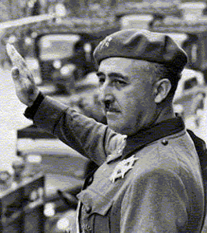
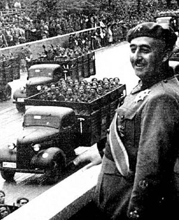
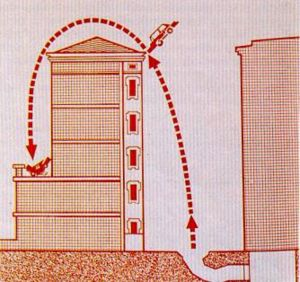
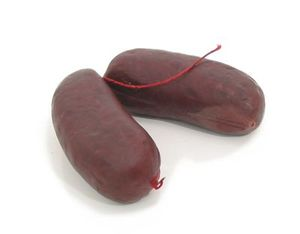

Historia reciente de Espiña
 De: La Frikipedia, la enciclopedia extremadamente seria.
De: La Frikipedia, la enciclopedia extremadamente seria.
Vamos a analizar nuestra historia con las siguientes fechas que marcaron la vida de nuestro país.
Esto es muy importante, ya que forma parte de nuestra cultura y no hay que ir por la vida de tonto o de "ijnorante" porque si no te van a colar una barra de pan por 20 leros.
Cronología Espiñola
 Paquito, prometiendo a los espiñoles la inauguración de un pantano.
 ...Y poco después descojonandose porque los
ingenuos espiñoles se lo habían creido.
 Maniobra de Carrero conduciendo borracho por
Madrid, la cual le costó 6 puntos en el carné.
 Si pones en
Gugel: Historia de España, te sale esta imagen...muy ilustrativo (a juego con la foto de Paquito)
- 1492: Nace Espiña de un huevo incubado por Isabel la Católica el mismo año que se descubre América
- 1903: Se inventa el furbo.
- 1905: Fraga cumple 312 años
- 1908: Te la meto por el chocho.
- 1912: Madrid pierde unas olimpiadas.
- 1924: Fecha sin mayor importancia.
- 1931: Ocurren cosas normales.
- 1941: El fusilamiento se convierte en deporte nacional.
- 1942: "Descubrición" de América por segunda vez.
- 1945: Hitler pierde jugando al parchís y se cabrea con Paquito por no haberle ayudao a contar las casillas. Decide tirarse un tiro.
- 1949: En la nochevieja se celebra la entrada en 1950.
- 1960: Franco inaugura un pantano.
- 1961: Franco inaugura un pantano.
- 1962: Franco se pone malo y no inaugura ningún pantano.
- 1963: Franco inaugura, ni uno ni dos, si no tres pantanos.
- 1975: Tras atragantarse con un galletita salada mientras se bañaba en un pantano, Franco sufre un desgraciao accidente que le lleva a estar 2 metros bajo tierra.
- 1976: La gente todavía cree en la reencarnación de Paquito en una musaraña.
- 1978: La gente se empieza a creer lo de que Franco las palmó.
- 1979: Se hace la Constitución donde se reclaman los derechos de los creyentes en el Chucknicismo y se dan privilegios a la nobleza y al clero (como tener la magnífica, neutral y leal Cope o el prestigioso, independiente y de reconocido buen gusto internacional, el periódico El Mundo) mientras algunos fachas se pasan al color rojo y fundan el PSOE, su piriódico el País y hacen resucitar a Torquemada con el nombre de Polanco.
- 1981: Titular de un periódico sueco: "Un hombre vestido de torero asalta el Congreso de Madrid" Un aplauso joer. Por supuesto el torero no era otro que Tejero y el del periódico un giliflautas.
- 1986: La Unión Europea entra en Espiña y Alfonso Guerra la lleva a hacerse la cirugía plástica"No la va a reconocer ni la madre que la parió", para escándalo de obispos, arzobispos y cardenales(pero no curas).
- 1987: La Unión Europea se arrepiente.
- 1992: Se inaugura
otro pantano el Bar Celona que es sede de los "Jurgos Olímpicos" de baretos del mundo.
- 1995: La Virgen María aparece en televisión para contarnos revelaciones.
- 2000: El efecto 2000 provoca en ordenadores Espiñoles que se peten. Se descubre que en realidad es un ataque de Hasecorp para que le compremos los nuevos Güindos XD. Dos segundos despues del ataque apareció Chuck Norris y lo solucionó, cosa que hizo que nadie notara la diferencia.
- 2001: Sale el lero que subirá el precio del pan y el de las gominolas de sabor a frambuesa.
- 2002: Ánsar estaba "trabajaandooo en elluu".
- 2005: Ramonchu consigue que todos los espiñoles canten al unísono la rima del año.
- 2007: Muere el Fernando Fernán Gómez, se separan los Cruz y Raya, se secuestra un número de El Jueves en Viernes y La Frikipedia pierde un juicio. Año negro para el humor.El Rey visita el zoo de Madrid y discute con un mono soltándole: " ¿Por qué no te callas ? "
- 2008: La niña de Rajoy estudia educación para la ciudadanía, se hace lesbiana, vota al PSAO y se casa por lo civil (si es que es lo que tiene tener a un papi tan liberal...). La selección espiñola gana la Eurocopa. Se celebra la Expo 2008 del hagua en Zaragoza.
- 2009: la salsa boloñesa es declarada menú oficial en las universidades Espiñolas después de que los universitarios se manifiesten en contra del menú del '92.
- 2010:
La selección espiñola gana el mundial (Próximamente, en los mejores cines)
- 2011: El 15-M unos radicales-republicanos y perroflautas dirigidos por Rubalcaba deciden acampar, para implantar la III República Española, en las más importantes plazas espiñolas (fuente de informacion: Intereconomía). Los Alemanes se enfadan y deciden no comer pepinos espiñoles. El 15-M se extiende por Europa con el nombre de "Esspañish Reboluchion". Er PePe se motiva por ganar las elecciones, "bueno y ahora qué?... vamos a ver que le prometimos a los españoles, sisisi... claro... LO siento, espiñoles, ar finar hay que haser massh recortesssh" Mariano Rajoy en su primer dia de presidencia mientra toda España decía "Are you fucking kidding me?" (
son politicos que nos podiamos esperar)
- 2012: Llega una tormenta solar a la Tierra, la cual se carga una bombilla; a los mayas se les olvido llevarse una en sus cálculos.
- 5000.01: Espiña pierde el control del mundo. Fue debido a que un Belieber no pudo encular a Carmen de Mairena. El mundo entero se revolucionó ante el suceso.
- 50000000000000000001: Un grupo radical hoigas destruye el mundo.
Ver también
Autor(es):
- Nexo
- Jowsh
- Doctor grijander
- Frikiman
- Aque
- Kirot
- Viento
- Azulejos
- Nadaquever
- Diegocon13
Frikipedia 2005-2016, Licencia
GFDL 1.2 - Extraído por FrikiLeaks